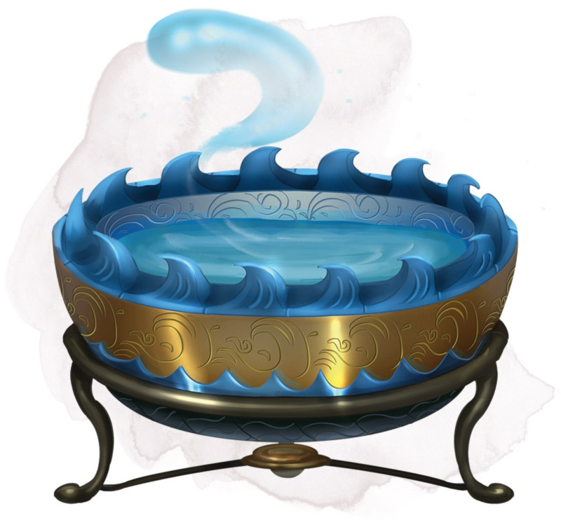

Jatte de contrôle des élémentaires de l'eau
Objet merveilleux, rare
Une fois cette jatte remplie d'eau, vous pouvez utiliser une action pour prononcer son mot de commande et convoquer un élémentaire de l'eau comme si vous aviez lancé le sort invocation d'élémentaire. La jatte ne peut être utilisée de nouveau de cette façon avant la prochaine aube.
Elle fait environ 30 centimètres de diamètre et la moitié en profondeur, pèse 1,5 kg et peut contenir environ 12 litres.
Elle fait environ 30 centimètres de diamètre et la moitié en profondeur, pèse 1,5 kg et peut contenir environ 12 litres.
Dungeon Master´s Guide (SRD)
